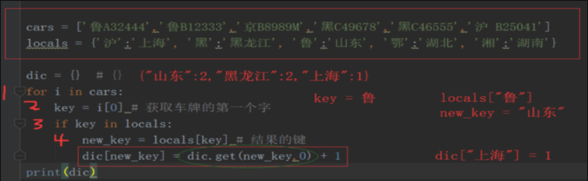

1.用户输入账号
2.用户输入密码
3.判断用户的账号是不是alex
4.如果账号是alex在继续判断密码是不是alexdsb
5.账号和密码都正确提示用户alex就是一个dsb
6.如果账号正确密码错误提示密码错误
7.如果账号错误提示账号错误
user = input("请输入账号：")
pwd = input("请输入密码：")
if user == "alex":
if pwd == "alexdsb":
print("alex就是一个dsb")
else:
print("密码错误！")
else:
print("账号错误！")
user = input("请输入账号：")
pwd = input("请输入密码：")
车牌区域划分, 现给出以下车牌. 根据车牌的信息, 分析出各省的车牌持有量. (选做题)
cars = ['鲁A32444','鲁B12333','京B8989M','⿊C49678','⿊C46555','沪 B25041']
locals = {'沪':'上海', '⿊':'⿊⻰江', '鲁':'⼭东', '鄂':'湖北', '湘':'湖南'}
结果: {'⿊⻰江':2, '⼭东': 2, '上海': 1}
答案:cars = ['鲁A32444','鲁B12333','京B8989M','⿊C49678','⿊C46555','沪 B25041']
locals = {'沪':'上海', '⿊':'⿊⻰江', '鲁':'⼭东', '鄂':'湖北', '湘':'湖南'}
dic = {} # {}
for i in cars:
key = i[0] # 获取车牌的第一个字
if key in locals:
new_key = locals[key] # 结果的键
dic[new_key] = dic.get(new_key,0) + 1 #get到dic中键的值,每次加一
print(dic)
